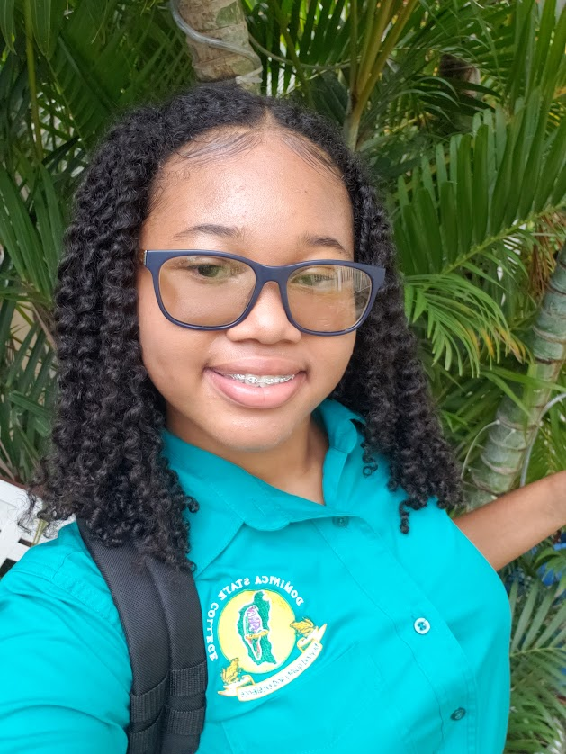

Hi! I'm Milagro, a 16-year-old student at Dominica State College.
I believe in staying curious and always seeking out new ways to grow.
I value hard work and dedication, and I’m someone who takes pride in following through on my goals.
I find joy in challenges, using them as opportunities to learn and improve.
I strive to be responsible in everything I do.